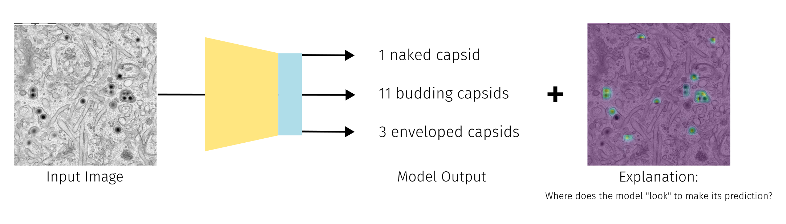

Image to Value(s)
Primary Focus: Explainable Object Counting in Microscopy Images
Application: Explainable Virus Capsid Quantification
Challenge: Deep Learning as Black Box
Required Labels: Location Labels
TL;DR 🧬✨ We developed a regression model to quantify maturation states ("naked", "budding", "enveloped") of human cytomegalovirus (HCMV) during its final envelopment process i.e. secondary envelopment. Researchers can adapt the provided notebook for their own EM data analysis. Click the "Open in Studio" button to get started. 🚀.

If you have any questions or encounter any issues while dealing with this use case please feel free to contact Hannah Kniesel or Tristan Payer.